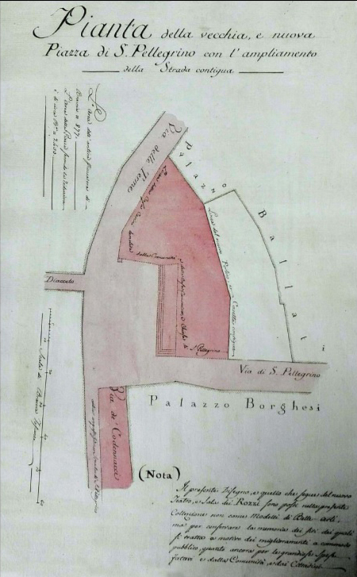
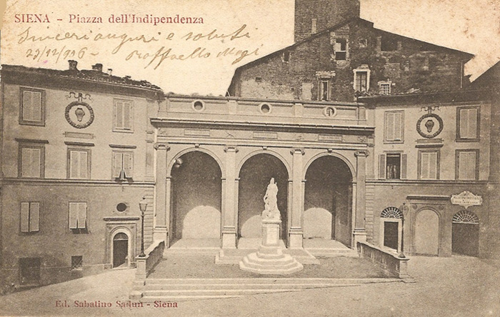
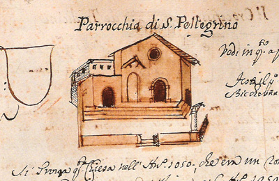

|
| |
Il 19 gennaio 1794 inizia la trasformazione di Piazza dell’Indipendenza. In origine l’area della piazza era inferiore a quella attuale, poiché vi si protendeva la chiesa di San Pellegrino, demolita nel 1812 per creare uno spazio più comodo dinanzi all’ingresso del Teatro dei Rozzi.

Alessandro Doveri
Pianta della vecchia e nuova Piazza San Pellegrino
con l'ampliamento della strada contigia
Accademia dei Rozzi, Siena
L’intitolazione attuale le fu data per ricordare la raggiunta indipendenza italiana poco dopo il 1878, quando fu eretta la loggia destinata ad ospitare il monumento commemorativo, dedicato ai Caduti nelle guerre del Risorgimento nazionale.
Anticamente la piazza ebbe nomi diversi: il più comune fu quello di Piazza di San Pellegrino; altri furono: Piazzetta del Grano, poiché l’area era destinata al mercato delle granaglie, e Piazza dell’Arte della Lana. Tutta l’area dell’ex Piazza di San Pellegrino, con ragionevole esclusione dell’antistante tratto di Via delle Terme, è assegnata dal Bando del 1729 alla Contrada Priora della Civetta.
La chiesa parrocchiale di San Pellegrino era addossata con l’abside al rosso palazzo dei Gallerani, che in parte ne era coperto, ed alla possente ed altissima Torre dell'Orsa, per mezzo della quale gli antichi proprietari dominavano le entrate nella piazza sia dalla Via dell’Arte che da quella del Termine.

immagine antecedente alla modifica
in stile neogotico
del Palazzo Ballati
(cliccare sulla cartolina per ingrandirla)
Con la parte anteriore, la chiesa di San Pellegrino, a cui era unita la cappelletta dei Lanaioli del SS.mo Corpo di Gesù, occupava quasi tutta la piazza, sulla quale si allungava con il sagrato rialzato di tre scalini e con un proprio spazio delimitato da un muretto.
La chiesa era stata edificata verso il 1050 in luogo di un vecchio romitorio. Nei primi tempi della Repubblica fu sede di diverse magistrature e nei locali adiacenti stavano in affitto la Curia del Placito, i Provveditori di Biccherna, i Consoli delle Donne, i Collettori delle Decime, delle Condanne e del Dazio vecchio, tanto che il Comune nel Duecento pagava alla chiesa di San Pellegrino un canone perpetuo ed aveva fatto dipingere a fresco le pareti della Curia dai migliori maestri che aveva la città.
In un disegno del Macchi si vede che, ai piedi della scalinata antistante il sagrato, la chiesa era delimitata da un muretto; sulla destra, dove questo faceva angolo, era stata sistemata una colonna con una lupa scolpita da Jacopo della Quercia. La stele era adoperata dall’Arte della Lana per l’esposizione del proprio vessillo.

Nel 1777 fu totalmente demolita la cappellina dei Lanaioli, che era stata interdetta al culto nel 1575, in occasione della visita apostolica fatta alle chiese senesi da monsignor Bossio.
La parrocchia venne soppressa nel 1783 ed il suo titolo fu trasferito alla chiesa di Santa Maria alla Sapienza; poi, nel 1812, la chiesa di San Pellegrino fu completamente distrutta.
Dopo la demolizione del millenario edificio, nel maggio 1879 l’area fu designata dal Consiglio Comunale ad accogliere il monumento ai Martiri dell’Indipendenza italiana.
I lavori furono affidati all’architetto Archimede Vestri che, nel 1887, costruì sullo sfondo della piazza un loggiato a tre arcate, una nuova facciata per i fabbricati ai lati di questo ed una gradinata sulla quale due anni dopo venne collocato il monumento, opera di Tito Sarrocchi, rappresentante una donna, l’Italia, che stringe nella mano sinistra lo scettro, mentre con la destra fa l’atto di deporre sopra un leone ferito e morente disteso ai suoi piedi una corona.
Oggi la loggia è vuota ed inutile. La scultura del Sarrocchi è stata confinata in un giardino del quartiere di San Prospero e due medaglioni raffiguranti i celebri eretici Lelio e Fausto Socini, che decoravano il porticato, sono stati murati nella facciata del Palazzo Sozzini-Malavolti in Pantaneto, dal lato di Via Follonica.
|

 ACCADDE OGGI
ACCADDE OGGI